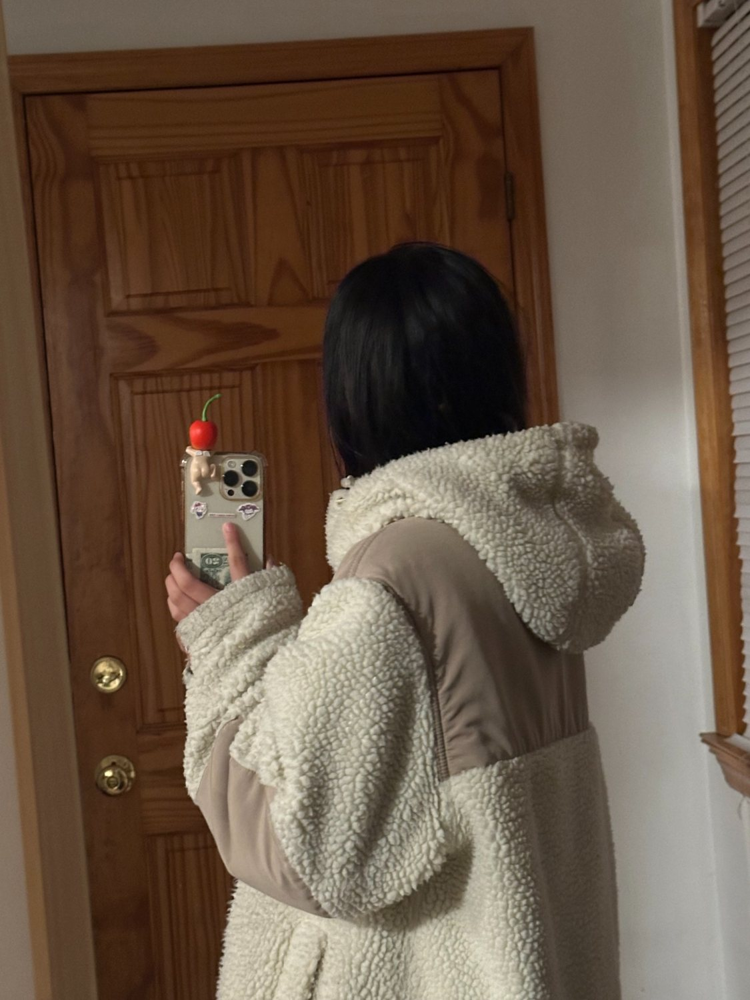

Ending Two · The Unfinished Reflection
Healing doesn’t happen in one night.
You return to your bedroom with the same worries you had before. Some mornings will still be difficult. But you put one of your old drawings on the wall. You don’t love every part of yourself yet—and you decide that trying counts.